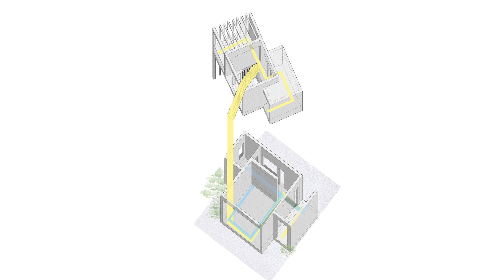
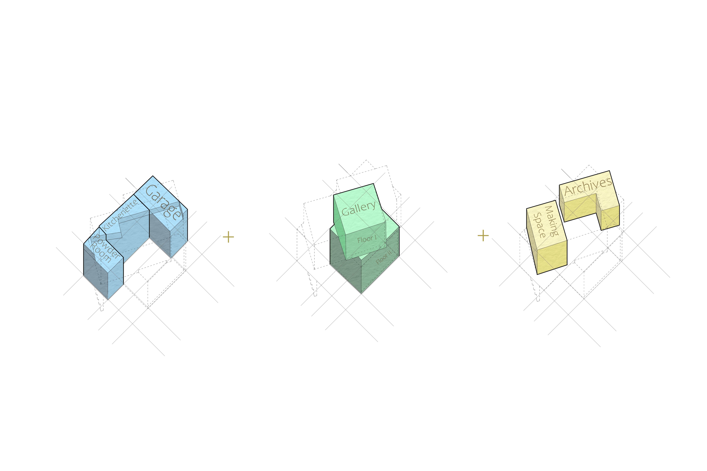
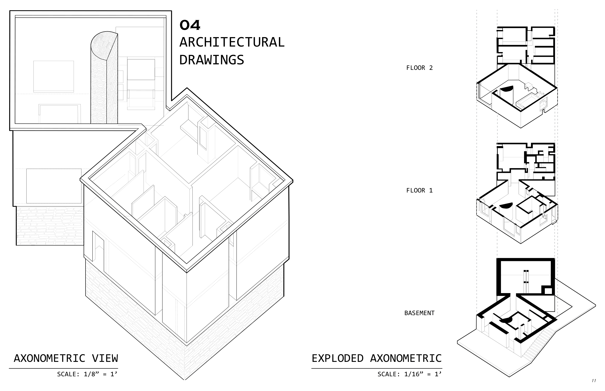

The Meridian Imaginarium
A space for a historical cartographer who does art revival work, exploring how mapping can be translated into built form. The design evolves around a twisting central gallery.
Academic Term: 2026 Spring
Instructors: Tommy CheeMou Yang & Tonya Markiewicz

Project Description
All programmatic elements wrap around the gallery in a cluster organization. The lower rooms (the kitchenette, powder room, and receiving space) are all adjacent and normal to the lower half of the gallery. Their adjacency allows for ease of movement and convenience in home life. The tilted plan also allows for daylight to be controlled so that shadows don’t interfere with the studio space and temperatures stay more consistent (with the longer axis parallel with the north-south axis).


Culturally, the project reflects on revival art. Historical cartography reveals how projections change and how borders shifted and continue to shift as knowledge evolves. Similarly, the Meridian Imaginarium rejects static alignment. The upper floor’s rotation builds upon but does not replicate the past. Just as maps evolve, this mapmaker’s space evolves as well, resuling in a meridian structure that maps the very act of mapping itself.

